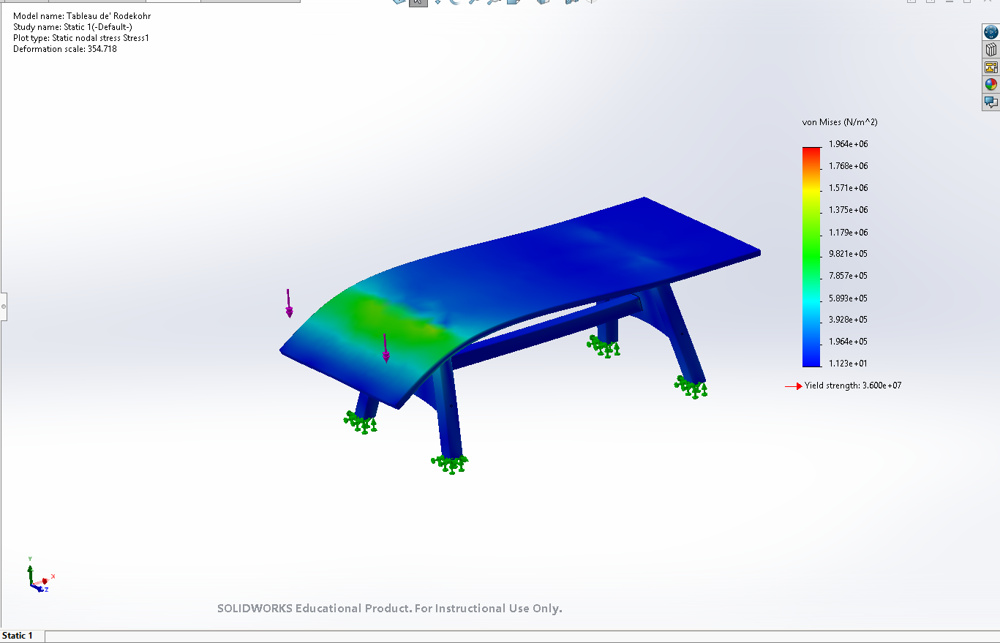
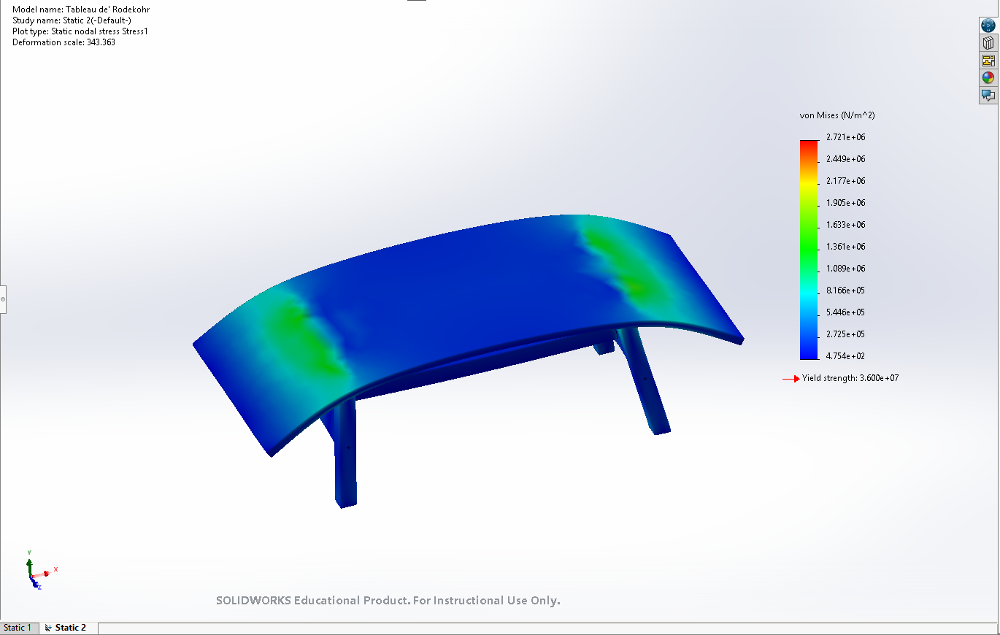
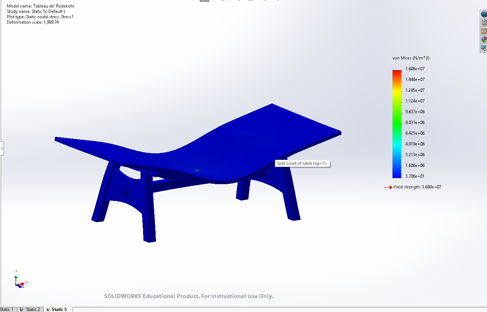
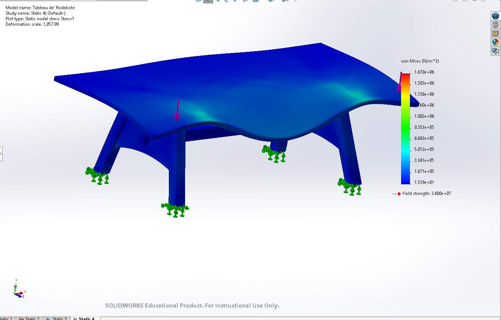
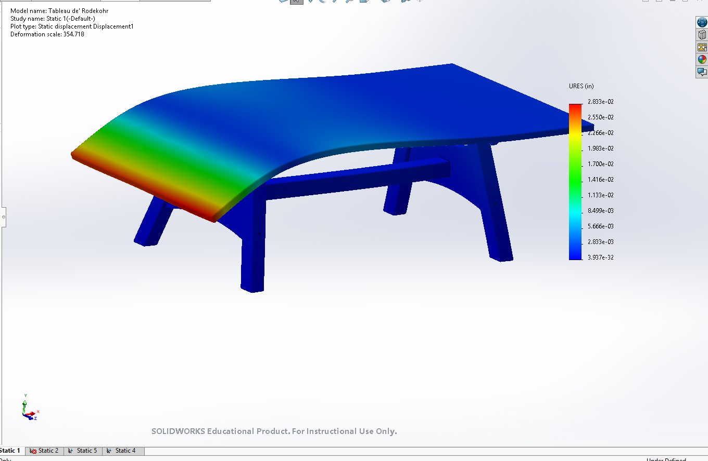
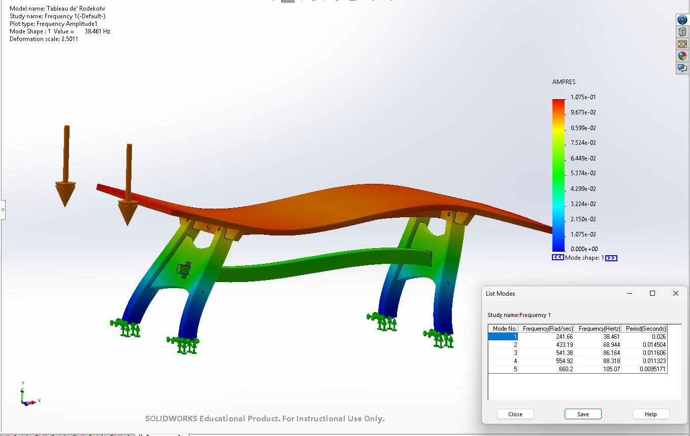
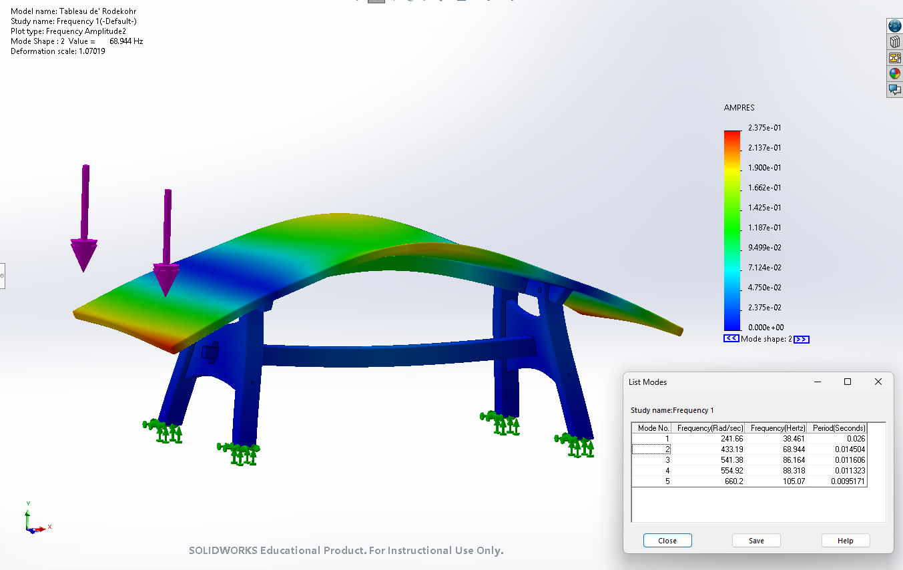
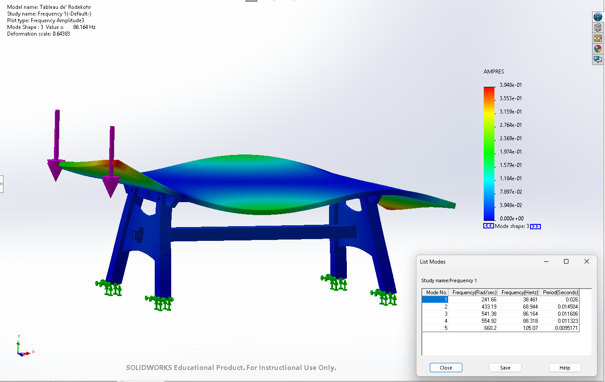

Mechanical engineering student at Anderson University. Design, simulation, and hands-on builds.
NO. 440-2026
The projects, designs, and analyses shown on this site are the original
academic and personal work of Nathan Flachman. Any resemblance to other
engineering disciplines, living or dead, is purely coincidental.
ENGR 440 · Anderson University · Material: Maple · 9/14/2026
+
Click to expand
Static and dynamic finite-element studies on a Maple table design —
evaluating response to a 200 lb load at four locations, the
resulting deformation, the first three vibration mode shapes and
natural frequencies, and a drop test for impact response.
Static Stress — 200 lb Load Cases

A · One narrow edge Reaction forces carry through the support legs while stress concentrates near the loaded edge.

B · Both narrow edges Load split across both narrow ends produces a more even stress gradient across the span.

C · Middle of the table Center-loaded case, showing displacement magnitude across the curved surface.

D · One long side Load along a long edge, modeled as a curved beam-like structure — concentrations along the loaded span.
Deformation — Case A

Narrow-edge loading Displacement plot of the loaded end under 200 lb force; purple arrows mark load points.
Vibration Modes — First Three Harmonics

Mode 1 First natural mode shape under Case A boundary conditions.

Mode 2 Second harmonic mode shape and corresponding frequency.

Mode 3 Third harmonic mode, completing the first three natural frequencies.
Vibration Mode Animation
Animation of vibration mode 2, showing the oscillatory deflection pattern over one cycle.
Drop Test
Add your drop-test screenshot or clip here once exported from SolidWorks.
Swap this note for a <figure class="fig"> image block or
another .video-block, matching the pattern above.
Ownership of the analyses and drawings on this site is retained by their
author. Reproduction for academic reference is welcomed; unauthorized
claim of original authorship is not.
FEA / SolidWorks
Nodal Stress & Deflection
ENGR 440 · Static Simulation · 2026
+
Click to expand
16-case finite element verification suite covering cantilever bending,
shear-moment diagrams, axial/bending rods, and pipe assemblies.
Simulations #1 & #2 Shear-moment and displacement studies on beam and tube geometries.Simulations #5 & #6 Axial/bending rod analysis and bolted assembly load study.